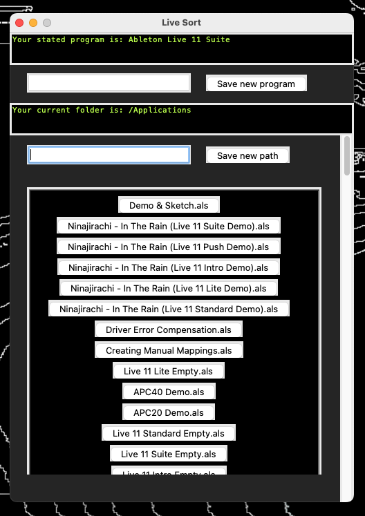
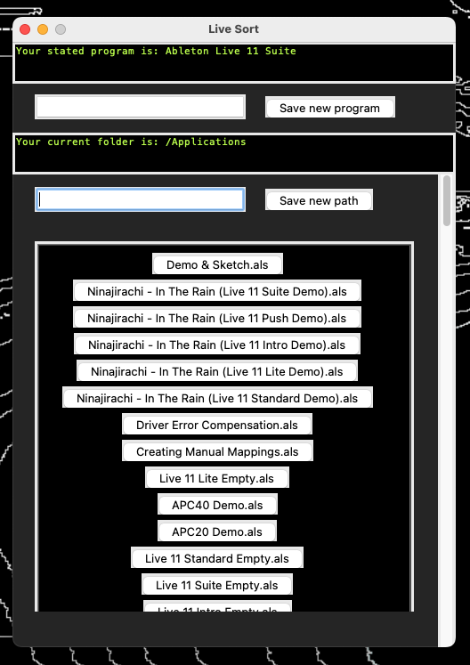

You can take a look at my current software publications on my Github page.
Live Sort
Live Sort is an Application for Ableton Live which sorts your project files by time of the last edit. You can quickly select a file to open it.
You can take a look at my current software publications on my Github page.
Live Sort is an Application for Ableton Live which sorts your project files by time of the last edit. You can quickly select a file to open it.
